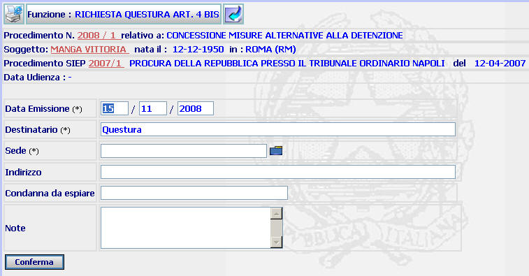
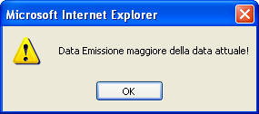

RICHIESTA INFORMAZIONI QUESTURA ART. 4 BIS: La funzione consente di produrre la richiesta dell'atto istruttorio "Questura art. 4bis" attraverso il quale si può chiedere alla Questura di fornire informazioni sull'eventuale sussistenza di collegamenti del condannato con la criminalità organizzata.
LE MASCHERE VIDEO
La funzione viene realizzata attraverso la maschera seguente in cui compaiono gli estremi del procedimento Sius, il nome del soggetto, gli estremi del procedimento Siep e l'eventuale data di udienza, nonchè una serie di campi dove poter inserire la data della richiesta, i dati dei destinatari e gli estremi della condanna da espiare.

COME FARE PER ...
| Per visualizzare il dettaglio del procedimento Sius l'utente deve cliccare sul link Anno/Numero del procedimento Sius; |
| Per visualizzare il dettaglio del soggetto l'utente deve cliccare sul link del cognome/nome del soggetto; |
| Per visualizzare il dettaglio del procedimento Siep l'utente deve cliccare sul link Anno/Numero del procedimento Siep; |
|
Per
produrre il documento istruttorio (che
verrà poi stampato attraverso un apposito pulsante presente nella successiva maschera
di
dettaglio dell'atto istruttorio
richiesto) l'utente deve
compilare i campi presenti nella maschera e selezionare il bottone
|
CAMPI
I campi da compilare sono i seguenti:
| Data emissione | Campo (obbligatorio) nel quale va inserito la data in cui si effettua la richiesta |
| Destinatario | Campo nel quale va inserita l'Autorità di P.S. alla quale la richiesta viene formulata, precompilato con l'indicazione della Questura |
| Sede |
Campo (obbligatorio) nel quale va inserito il Comune ove ha sede l'Autorità
di P.S. alla quale la richiesta va indirizzata (digitandolo per intero
o selezionandolo attraverso l'apposito
Pulsante di Ricerca da Lista Predefinita |
| Condanna da espiare | Campo nel quale vanno inseriti gli estremi della sentenza di condanna da espiare |
| Note | Campo nel quale vanno inserite eventuali annotazioni |
PULSANTI
Sono presenti i seguenti pulsanti facenti parte del gruppo di pulsanti di "Uso Comune:
|
PULSANTE |
DESCRIZIONE |
|
|
Questo pulsante ha lo
scopo di stampare il contesto (videata) |
|
|
Questo pulsante consente di tornare alla maschera precedente |
BOTTONI
Oltre ai
comandi funzionali relativi al menù verticale
è presente il bottone
 attraverso il quale
si confermano i dati inseriti e si perviene alla successiva maschera di
dettaglio
attraverso il quale
si confermano i dati inseriti e si perviene alla successiva maschera di
dettaglio
CONTROLLI
Il sistema effettua i seguenti controlli:
| verifica che la data emissione sia pari o inferiore a quella di sistema, fornendo in caso contrario il seguente messaggio |

|
verifica che nel campo sede venga inserito un dato corrispondente ad uno dei Comuni presente nella lista selezionabile attraverso il Pulsante di Ricerca da Lista Predefinita. Nel caso in cui non venga riscontrata detta corrispondenza, viene visualizzato il seguente messaggio |

|
verifica che sia stato selezionato una sede, fornendo in caso contrario il seguente messaggio |